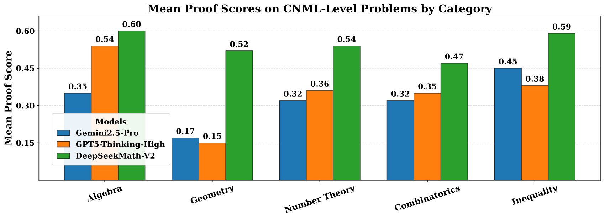

DeepSeekMath-V2: Towards Self-Verifiable Mathematical Reasoning / 全文中英对照¶
来源：arXiv:2511.22570v1。英文段落后紧接中文，覆盖所取 HTML 版本的主文、附录、图表、脚注与参考文献；公式、数字表和书目信息共用。中文以机器初译为底稿，进行了术语整理与结构核对，尚未逐句人工审定；遇到歧义请以紧邻英文和原论文为准。 本文采用作者官方仓库公开报告，其许可证及版权声明随目录保留；中文为该版本的翻译改写。
Authors and affiliations / 作者与机构¶
Zhihong Shao*, Yuxiang Luo*, Chengda Lu* † , Z.Z. Ren* Jiewen Hu, Tian Ye, Zhibin Gou, Shirong Ma, Xiaokang Zhang DeepSeek-AI zhihongshao@deepseek.com https://github.com/deepseek-ai/DeepSeek-Math-V2 Corresponding author: Core contributors † Work done during internship at DeepSeek-AI.
EN. \reportnumber
中. \报告编号
EN. 001
中. 001
Abstract / 摘要¶
EN. Large language models have made significant progress in mathematical reasoning, which serves as an important testbed for AI and could impact scientific research if further advanced. By scaling reasoning with reinforcement learning that rewards correct final answers, LLMs have improved from poor performance to saturating quantitative reasoning competitions like AIME and HMMT in one year. However, this approach faces fundamental limitations. Pursuing higher final answer accuracy doesn’t address a key issue: correct answers don’t guarantee correct reasoning. Moreover, many mathematical tasks like theorem proving require rigorous step-by-step derivation rather than numerical answers, making final answer rewards inapplicable. To push the limits of deep reasoning, we believe it is necessary to verify the comprehensiveness and rigor of mathematical reasoning. Self-verification is particularly important for scaling test-time compute, especially for open problems without known solutions. Towards self-verifiable mathematical reasoning, we investigate how to train an accurate and faithful LLM-based verifier for theorem proving. We then train a proof generator using the verifier as the reward model, and incentivize the generator to identify and resolve as many issues as possible in their own proofs before finalizing them. To maintain the generation-verification gap as the generator becomes stronger, we propose to scale verification compute to automatically label new hard-to-verify proofs, creating training data to further improve the verifier. Our resulting model, DeepSeekMath-V2, demonstrates strong theorem-proving capabilities, achieving gold-level scores on IMO 2025 and CMO 2024 and a near-perfect 118/120 on Putnam 2024 with scaled test-time compute. While much work remains, these results suggest that self-verifiable mathematical reasoning is a feasible research direction that may help develop more capable mathematical AI systems.
中. 大型语言模型在数学推理方面取得了重大进展，数学推理是人工智能的重要测试平台，如果进一步发展，可能会影响科学研究。通过使用奖励正确最终答案的强化学习来扩展推理，LLM在一年内从糟糕的表现改善到在 AIME 和 HMMT 等定量推理竞赛中达到饱和状态。然而，这种方法面临着根本的局限性。追求更高的最终答案准确性并不能解决关键问题：正确的答案并不能保证正确的推理。此外，许多数学任务（例如定理证明）需要严格的逐步推导，而不是数字答案，这使得最终答案奖励不适用。为了突破深度推理的极限，我们认为有必要验证数学推理的全面性和严谨性。自我验证对于扩展测试时计算尤其重要，尤其是对于没有已知解决方案的开放问题。为了实现可自我验证的数学推理，我们研究如何训练准确且忠实的基于 LLM 的验证者来进行定理证明。然后，我们使用验证者作为奖励模型来训练证明生成器，并激励生成器在最终确定证明之前识别并解决其证明中尽可能多的问题。为了在生成器变得更强时保持生成验证差距，我们建议扩展验证计算以自动标记新的难以验证的证明，创建训练数据以进一步改进验证器。我们的最终模型 DeepSeekMath-V2 展示了强大的定理证明能力，在 IMO 2025 和 CMO 2024 上获得了黄金级分数，在 Putnam 2024 上通过扩展测试时间计算获得了近乎完美的 118/120。虽然还有很多工作要做，但这些结果表明，可自我验证的数学推理是一个可行的研究方向，可能有助于开发更强大的数学人工智能系统。
Introduction / 简介¶
EN. The conventional approach to reinforcement learning (RL) for mathematical reasoning involves rewarding large language models (LLMs) based on whether their predicted final answers to quantitative reasoning problems match ground-truth answers ( Guo et al., 2025 ) . This methodology suffices to allow frontier LLMs to saturate mathematical competitions that primarily evaluate final answers, such as AIME and HMMT. However, this reward mechanism has two fundamental limitations. First, it serves as an unreliable proxy for reasoning correctness – a model can arrive at the correct answer through flawed logic or fortunate errors. Second, it is inapplicable to theorem proving tasks, where problems may not require producing numerical final answers and rigorous derivation is the primary objective.
中. 用于数学推理的强化学习 (RL) 的传统方法涉及根据大型语言模型 (LLM) 对定量推理问题的预测最终答案是否与真实答案相匹配来奖励大型语言模型 (LLM)（Guo et al., 2025）。这种方法足以让前沿LLM能够饱和主要评估最终答案的数学竞赛，例如 AIME 和 HMMT。然而，这种奖励机制有两个基本局限性。首先，它作为推理正确性的不可靠代理——模型可以通过有缺陷的逻辑或幸运的错误得出正确的答案。其次，它不适用于定理证明任务，其中问题可能不需要产生数字的最终答案，并且严格的推导是主要目标。
EN. Consequently, LLMs trained on quantitative reasoning problems with such final answer reward still frequently produce mathematically invalid or logically inconsistent natural-language proofs. Moreover, this training approach does not naturally develop the models’ ability to verify proof validity – they exhibit high false-positive rates, often claiming incorrect proofs are valid even when they contain obvious logical flaws.
中. 因此，接受过定量推理问题训练并获得最终答案奖励的LLM仍然经常产生数学上无效或逻辑上不一致的自然语言证明。此外，这种训练方法并不能自然地发展模型验证证明有效性的能力——它们表现出很高的误报率，经常声称不正确的证明是有效的，即使它们包含明显的逻辑缺陷。
EN. The lack of a generation-verification gap in natural-language theorem proving hinders further improvement. To address this, we propose developing proof verification capabilities in LLMs. Our approach is motivated by several key observations:
中. 自然语言定理证明中缺乏生成验证差距阻碍了进一步的改进。为了解决这个问题，我们建议在LLM中开发证明验证功能。我们的方法受到几个关键观察的启发：
EN. Humans can identify issues in proofs even without reference solutions – a crucial ability when tackling open problems.
中. 即使没有参考解决方案，人类也可以识别证明中的问题——这是解决开放问题时的关键能力。
EN. A proof is more likely to be valid when no issues can be identified despite scaled verification efforts.
中. 当尽管进行了大规模验证工作但仍无法发现问题时，证明更有可能有效。
EN. The efforts required to identify valid issues can serve as a proxy for proof quality, which can be exploited to optimize proof generation.
中. 识别有效问题所需的努力可以作为证明质量的代理，可以用来优化证明生成。
EN. We believe that LLMs can be trained to identify proof issues without reference solutions. Such a verifier would enable an iterative improvement cycle: (1) using verification feedback to optimize proof generation, (2) scaling verification compute to auto-label hard-to-verify new proofs, thereby creating the training data to improve the verifier itself, and (3) using this enhanced verifier to further optimize proof generation. Moreover, a reliable proof verifier enables us to teach proof generators to evaluate proofs as the verifier does. This allows a proof generator to iteratively refine its proofs until it can no longer identify or resolve any issues. In essence, we make the model explicitly aware of its reward function and enable it to maximize this reward through deliberate reasoning rather than blind trial-and-error.
中. 我们相信，LLM可以接受培训，在没有参考解决方案的情况下识别证明问题。这样的验证器将实现迭代改进周期：（1）使用验证反馈来优化证明生成，（2）扩展验证计算以自动标记难以验证的新证明，从而创建训练数据来改进验证器本身，以及（3）使用此增强型验证器进一步优化证明生成。此外，可靠的证明验证器使我们能够教导证明生成器像验证器一样评估证明。这使得证明生成器能够迭代地完善其证明，直到它无法再识别或解决任何问题。本质上，我们让模型明确地意识到其奖励函数，并使其能够通过深思熟虑的推理而不是盲目的试错来最大化奖励。
EN. Built on DeepSeek-V3.2-Exp-Base ( DeepSeek-AI, 2025 ) , we developed DeepSeekMath-V2 , a large language model optimized for natural-language theorem proving that demonstrates self-verifiable mathematical reasoning. Our model can assess and iteratively improve its own proofs, achieving gold-level performance in premier high-school mathematics competitions including IMO 2025 and CMO 2024. On the Putnam 2024 undergraduate competition, it scored 118/120, exceeding the highest score of 90 1 obtained by human participants.
中. 我们在 DeepSeek-V3.2-Exp-Base（DeepSeek-AI，2025）的基础上开发了 DeepSeekMath-V2，这是一种针对自然语言定理证明而优化的大型语言模型，可演示可自我验证的数学推理。我们的模型可以评估并迭代改进自己的证明，在包括 IMO 2025 和 CMO 2024 在内的顶级高中数学竞赛中取得了金级表现。在 Putnam 2024 本科生竞赛中，它获得了 118/120 的得分，超过了人类参与者获得的最高分 90 1。
Method / 方法¶
Proof Verification / 证明验证¶
Training a Verifier to Identify Issues and Score Proofs / 培训验证者识别问题并评分证明¶
EN. We developed high-level rubrics \(\mathcal{I}_{v}\) for proof evaluation (see Appendix A.2 ) with the goal of training a verifier to evaluate proofs according to these rubrics, mirroring mathematical experts’ assessment process. Specifically, given a problem \(X\) and a proof \(Y\) , the verifier \(\pi_{\varphi}(\cdot|{}X,Y,\mathcal{I}_{v})\) is designed to produce a proof analysis that first summarizes identified issues (if any) and then assigns a score based on three levels: 1 for complete and rigorous proofs with all logical steps clearly justified; 0.5 for proofs with sound overall logic but minor errors or omitted details; and 0 for fundamentally flawed proofs containing fatal logical errors or critical gaps.
中. 我们开发了用于证明评估的高级准则 \(\mathcal{I}_{v}\)（参见附录 A.2），目的是训练验证者根据这些准则评估证明，反映数学专家的评估过程。具体来说，给定问题 \(X\) 和证明 \(Y\) ，验证者 \(\pi_{\varphi}(\cdot|{}X,Y,\mathcal{I}_{v})\) 旨在生成证明分析，首先总结已识别的问题（如果有），然后根据三个级别分配分数： 1 表示完整且严格的证明，所有逻辑步骤都明确合理； 0.5对于整体逻辑合理但有轻微错误或遗漏细节的证明； 0 表示存在根本性缺陷的证明，包含致命的逻辑错误或关键缺陷。
Curating Cold Start RL Data / 整理冷启动强化学习数据¶
EN. We constructed our initial training data through the following process:
中. 我们通过以下过程构建了初始训练数据：
EN. 1.
中. 1.
EN. We crawled problems from Art of Problem Solving (AoPS) contests 2 , prioritizing math olympiads, team selection tests, and post-2010 problems explicitly requiring proofs, totaling 17,503 problems. This problem set is denoted as \(\mathcal{D}_{p}\) .
中. 我们从问题解决艺术 (AoPS) 竞赛 2 中抓取问题，优先考虑数学奥林匹克竞赛、团队选拔测试以及明确需要证明的 2010 年后问题，总共 17,503 个问题。该问题集表示为 \(\mathcal{D}_{p}\) 。
EN. 2.
中. 2.
EN. We generated candidate proofs using a variant of DeepSeek-V3.2-Exp-Thinking. As this model was not optimized for theorem proving and tended to produce concise but error-prone outputs, we prompted it to iteratively refine its proofs over multiple rounds to improve comprehensiveness and rigor.
中. 我们使用 DeepSeek-V3.2-Exp-Thinking 的变体生成候选证明。由于该模型并未针对定理证明进行优化，并且往往会产生简洁但容易出错的输出，因此我们促使其在多轮中迭代地完善其证明，以提高全面性和严谨性。
EN. 3.
中. 3.
EN. We randomly sampled proofs across diverse problem types (e.g., algebra and number theory) and had mathematical experts score each proof according to the evaluation rubrics described above.
中. 我们对不同问题类型（例如代数和数论）的证明进行了随机抽样，并让数学专家根据上述评估标准对每个证明进行评分。
EN. This process yielded an initial RL dataset \(\mathcal{D}_{v}=\{(X_{i},Y_{i},s_{i})\}\) , where each item consists of a problem \(X_{i}\) , a proof \(Y_{i}\) , and an overall proof score \(s_{i}\in\{0,0.5,1\}\) .
中. 这个过程产生了一个初始的 RL 数据集 \(\mathcal{D}_{v}=\{(X_{i},Y_{i},s_{i})\}\) ，其中每个项目由一个问题 \(X_{i}\) 、一个证明 \(Y_{i}\) 和一个总体证明分数 \(s_{i}\in\{0,0.5,1\}\) 组成。
RL Objective. / RL 目标。¶
EN. Building on a version of DeepSeek-V3.2-Exp-SFT which was supervised fine-tuned on reasoning data related to mathematics and code, we trained the model with reinforcement learning to produce proof analyses using two reward components:
中. 基于 DeepSeek-V3.2-Exp-SFT 版本，该版本根据与数学和代码相关的推理数据进行监督微调，我们通过强化学习训练模型，以使用两个奖励组件进行证明分析：
EN. Format reward \(R_{\text{format}}\) : An indicator function that enforces the model to generate both a summary of identified issues and a proof score, by checking whether the final response contains the key phrase “Here is my evaluation of the solution:” as well as a score within \boxed{} following “Based on my evaluation, the final overall score should be:”.
中. 格式奖励 \(R_{\text{format}}\) ：一个指示函数，通过检查最终响应是否包含关键短语“这是我对解决方案的评估：”以及“基于我的评估，最终总体分数应该是：”之后的 \boxed{} 内的分数，强制模型生成已识别问题的摘要和证明分数。
EN. Score reward \(R_{\text{score}}\) : Rewards based on proximity between predicted score \(s_{i}^{\prime}\) and annotated score \(s_{i}\) :
中. 分数奖励 \(R_{\text{score}}\) ：基于预测分数 \(s_{i}^{\prime}\) 和注释分数 \(s_{i}\) 之间的接近程度的奖励：
EN. The RL objective for training the verifier is:
中. 训练验证者的强化学习目标是：
EN. where \(V_{i}^{\prime}\) denotes the verifier’s final response and \(s_{i}^{\prime}\) is the proof score extracted from it.
中. 其中\(V_{i}^{\prime}\)表示验证者的最终响应，\(s_{i}^{\prime}\)是从中提取的证明分数。
Introducing Meta-Verification to Review Proof Analyses / 引入元验证来审查证明分析¶
EN. The approach described in Section 2.1.1 trains proof verification through RL to align predicted proof scores with expert annotations, but provides no direct supervision on the identified issues themselves. This creates a critical vulnerability: when evaluating flawed proofs (where \(s_{i}<1\) ) during training, the verifier can receive full reward by predicting the correct scores while hallucinating non-existent issues, undermining its trustworthiness.
中. 第 2.1.1 节中描述的方法通过 RL 训练证明验证，以使预测的证明分数与专家注释保持一致，但不对已识别的问题本身提供直接监督。这造成了一个严重的漏洞：在训练期间评估有缺陷的证明（其中 \(s_{i}<1\) ）时，验证者可以通过预测正确的分数来获得全额奖励，同时幻想不存在的问题，从而破坏其可信度。
EN. To address this problem, we introduce meta-verification : a secondary evaluation process that assesses whether issues identified by the verifier indeed exist and whether these issues logically justify the predicted proof score according to the evaluation rubrics \(\mathcal{I}_{v}\) . The complete meta-verification rubrics \(\mathcal{I}_{mv}\) are detailed in Appendix A.3 .
中. 为了解决这个问题，我们引入了元验证：一个二次评估过程，用于评估验证者识别的问题是否确实存在，以及这些问题是否根据评估规则 \(\mathcal{I}_{v}\) 在逻辑上证明了预测的证明分数的合理性。完整的元验证规则 \(\mathcal{I}_{mv}\) 详见附录 A.3。
EN. We trained a dedicated meta-verifier using RL to perform this evaluation. By incorporating the meta-verifier’s feedback into verifier training, we can improve the faithfulness of the verifier’s issue identification.
中. 我们使用强化学习训练了一个专用的元验证器来执行此评估。通过将元验证者的反馈纳入验证者训练中，我们可以提高验证者问题识别的可信度。
Meta-Verifier Training Process / 元验证者培训过程¶
EN. 1.
中. 1.
EN. We obtained an initial verifier \(\pi_{\varphi}\) following Section 2.1.1 .
中. 我们按照第 2.1.1 节获得了初始验证器 \(\pi_{\varphi}\) 。
EN. 2.
中. 2.
EN. Mathematical experts scored the quality of verifier responses according to \(\mathcal{I}_{mv}\) , creating dataset \(\mathcal{D}_{mv}=\{(X_{i},Y_{i},V_{i},ms_{i})\}\) , where \(V_{i}\) is the analysis of proof \(Y_{i}\) and \(ms_{i}\in\{0,0.5,1\}\) is the expert-annotated quality score.
中. 数学专家根据 \(\mathcal{I}_{mv}\) 对验证者响应的质量进行评分，创建数据集 \(\mathcal{D}_{mv}=\{(X_{i},Y_{i},V_{i},ms_{i})\}\) ，其中 \(V_{i}\) 是对证明 \(Y_{i}\) 的分析，\(ms_{i}\in\{0,0.5,1\}\) 是专家注释的质量得分。
EN. 3.
中. 3.
EN. We trained a meta-verifier \(\pi_{\eta}(\cdot|X,Y,V,\mathcal{I}_{mv})\) to analyze the verifier’s proof analysis \(V\) . The meta-verifier produces a summary of issues found in the analysis itself, followed by a quality score measuring how accurate and justified the verifier’s analysis is. The RL objective follows the same structure as the verifier training, with format and score rewards.
中. 我们训练了一个元验证者 \(\pi_{\eta}(\cdot|X,Y,V,\mathcal{I}_{mv})\) 来分析验证者的证明分析 \(V\) 。元验证者生成分析本身中发现的问题的摘要，然后是衡量验证者分析的准确性和合理性的质量分数。 RL 目标遵循与验证者训练相同的结构，具有格式和分数奖励。
EN. Using the trained meta-verifier \(\pi_{\eta}\) , we enhanced the verifier training by integrating meta-verification feedback into the reward function:
中. 使用经过训练的元验证器 \(\pi_{\eta}\) ，我们通过将元验证反馈集成到奖励函数中来增强验证器训练：
EN. where \(R_{\text{meta}}\) is the quality score from the meta-verifier.
中. 其中 \(R_{\text{meta}}\) 是元验证器的质量分数。
EN. We trained the enhanced verifier on both the verification dataset \(\mathcal{D}_{v}\) and the meta-verification dataset \(\mathcal{D}_{mv}\) , using the same reward mechanism on \(\mathcal{D}_{mv}\) as used for training the meta-verifier. The resulting model can perform both proof verification and meta-verification tasks.
中. 我们在验证数据集 \(\mathcal{D}_{v}\) 和元验证数据集 \(\mathcal{D}_{mv}\) 上训练增强验证器，并在 \(\mathcal{D}_{mv}\) 上使用与训练元验证器相同的奖励机制。生成的模型可以执行证明验证和元验证任务。
EN. On a validation split of \(\mathcal{D}_{v}\) , the average quality score of the verifier’s proof analyses – as evaluated by the meta-verifier – improved from 0.85 to 0.96, while maintaining the same accuracy in proof score prediction.
中. 在 \(\mathcal{D}_{v}\) 的验证拆分中，验证者证明分析的平均质量得分（由元验证者评估）从 0.85 提高到 0.96，同时保持证明得分预测的准确性相同。
Proof Generation / 证明生成¶
Training a Generator for Theorem Proving / 训练用于定理证明的生成器¶
EN. With verifier \(\pi_{\varphi}\) serving as a generative reward model, we train a proof generator \(\pi_{\theta}(\cdot|{}X)\) with the RL objective:
中. 使用验证器 \(\pi_{\varphi}\) 作为生成奖励模型，我们训练具有 RL 目标的证明生成器 \(\pi_{\theta}(\cdot|{}X)\)：
EN. where \(R_{Y}\) is the proof score produced by \(\pi_{\varphi}(\cdot|{}X_{i},Y_{i},\mathcal{I}_{v})\) .
中. 其中 \(R_{Y}\) 是 \(\pi_{\varphi}(\cdot|{}X_{i},Y_{i},\mathcal{I}_{v})\) 生成的证明分数。
Enhancing Reasoning via Self-Verification / 通过自我验证增强推理¶
EN. When a proof generator fails to produce a completely correct proof in one shot – common for challenging problems from competitions like IMO and CMO – iterative verification and refinement can improve results. This involves analyzing the proof with an external verifier and prompting the generator to address identified issues.
中. 当证明生成器无法一次性生成完全正确的证明时（这对于 IMO 和 CMO 等竞赛中的挑战性问题很常见），迭代验证和细化可以改善结果。这涉及与外部验证者分析证明并提示生成器解决已识别的问题。
EN. However, we observed a critical limitation: when prompted to both generate and analyze its own proof in one shot, the generator tends to claim correctness even when the external verifier easily identify flaws. In other words, while the generator can refine proofs based on external feedback, it fails to evaluate its own work with the same rigor as the dedicated verifier.
中. 然而，我们观察到一个关键的限制：当提示一次性生成和分析自己的证明时，即使外部验证者很容易识别缺陷，生成器也倾向于声称正确性。换句话说，虽然生成器可以根据外部反馈完善证明，但它无法像专用验证器一样严格地评估自己的工作。
EN. This observation motivated us to endow the proof generator with genuine verification capabilities. During training, we prompt the generator \(\pi_{\theta}\) to produce a proof \(Y\) followed by a self-analysis \(Z\) that follows the same format and rubrics \(\mathcal{I}_{v}\) as the verifier (see Appendix A.1 ). We denote the proof score predicted in the self-analysis as \(s^{\prime}\) .
中. 这一观察促使我们赋予证明生成器真正的验证功能。在训练过程中，我们提示生成器 \(\pi_{\theta}\) 生成一个证明 \(Y\)，然后进行自我分析 \(Z\)，其遵循与验证者相同的格式和规则 \(\mathcal{I}_{v}\)（参见附录 A.1）。我们将自我分析中预测的证明分数表示为 \(s^{\prime}\) 。
EN. To ensure faithful self-evaluation, we use the verifier \(\pi_{\varphi}\) to assess both components: the proof \(Y\) receives score \(R_{Y}=s\) , and the self-analysis \(Z\) receives a meta-verification score \(R_{\text{meta}}(Z)=ms\) . The reward function combines these assessments:
中. 为了确保忠实的自我评估，我们使用验证器 \(\pi_{\varphi}\) 来评估这两个组件：证明 \(Y\) 收到分数 \(R_{Y}=s\) ，自我分析 \(Z\) 收到元验证分数 \(R_{\text{meta}}(Z)=ms\) 。奖励函数结合了这些评估：
EN. where \(R_{\text{format}}(Y,Z)\) verifies that both the proof and self-analysis follow the specified format, \(R_{\text{score}}(s^{\prime},s)\) rewards accurate self-assessment. We set \(\alpha=0.76\) and \(\beta=0.24\) . This reward structure creates the following incentives:
中. 其中\(R_{\text{format}}(Y,Z)\)验证证明和自我分析都遵循指定的格式，\(R_{\text{score}}(s^{\prime},s)\)奖励准确的自我评估。我们设置 \(\alpha=0.76\) 和 \(\beta=0.24\) 。这种奖励结构产生了以下激励：
EN. Faithful acknowledgment of errors is rewarded over false claims of correctness.
中. 忠实地承认错误比错误地声称正确性更能获得奖励。
EN. The highest rewards come from producing correct proofs and accurately recognizing their rigor.
中. 最高的回报来自于提供正确的证明并准确地认识到其严格性。
EN. A good strategy to obtain high rewards for the proof generator is to identify and resolve as many issues as possible before finalizing the response.
中. 为证明生成器获得高奖励的一个好策略是在最终响应之前识别并解决尽可能多的问题。
Synergy Between Proof Verification and Generation / 证明验证和生成之间的协同作用¶
EN. The proof verifier and generator create a synergistic cycle: the verifier improves the generator, and as the generator improves, it produces new proofs that challenge the verifier’s current capabilities. These challenging cases – where the verifier may fail to identify issues in a single attempt – become valuable training data for enhancing the verifier itself.
中. 证明验证者和生成器创建一个协同循环：验证者改进生成器，随着生成器的改进，它会产生挑战验证者当前能力的新证明。这些具有挑战性的案例（验证者可能无法在一次尝试中识别问题）成为增强验证者本身的宝贵培训数据。
EN. To retrain and improve the verifier, we need labeled correctness data for newly generated proofs. Manual annotation, while straightforward, becomes increasingly time-consuming as problems grow harder and errors become more subtle. To boost annotation efficiency, we generated multiple verifier analyses per proof to surface potential issues for human review.
中. 为了重新训练和改进验证器，我们需要为新生成的证明标记正确性数据。手动注释虽然简单，但随着问题变得越来越困难并且错误变得越来越微妙，它也变得越来越耗时。为了提高注释效率，我们为每个证明生成了多个验证者分析，以揭示潜在问题以供人工审查。
EN. From this AI-assisted annotation process, we recognized two facts that make it feasible to push the level of automation a step further:
中. 从这个人工智能辅助注释过程中，我们认识到两个事实使得进一步推动自动化水平成为可能：
EN. 1.
中. 1.
EN. Scaling verifier samples increases the probability of catching real issues in flawed proofs.
中. 扩展验证器样本可以增加在有缺陷的证明中发现实际问题的可能性。
EN. 2.
中. 2.
EN. Reviewing the verifier’s identified issues is exactly meta-verification , which is easier than identifying issues from scratch. Meta-verification is also more sample-efficient for LLMs to master.
中. 审查验证者已识别的问题正是元验证，这比从头开始识别问题更容易。对于LLM来说，元验证的样本效率也更高。
EN. Building on these observations, we developed the following automated labeling process:
中. 基于这些观察，我们开发了以下自动标记流程：
EN. 1.
中. 1.
EN. For each proof, generate \(n\) independent verification analyses
中. 对于每个证明，生成 \(n\) 独立验证分析
EN. 2.
中. 2.
EN. For analyses reporting issues (scores 0 or 0.5), generate \(m\) meta-verification assessments to validate the identified problems. An analysis is deemed valid if the majority of meta-assessments confirm its findings
中. 对于报告问题的分析（分数 0 或 0.5），生成 \(m\) 元验证评估以验证已识别的问题。如果大多数元评估证实了分析结果，则分析被视为有效
EN. 3.
中. 3.
EN. For each proof, we examine analyses that assign the lowest score. If at least \(k\) such analyses are deemed valid, the proof is labeled with that lowest score. If no legitimate issues are identified across all verification attempts, the proof is labeled with 1. Otherwise, the proof is discarded or routed to human experts for labeling
中. 对于每个证明，我们都会检查分配最低分数的分析。如果至少 \(k\) 此类分析被认为是有效的，则证明会标有最低分数。如果在所有验证尝试中都没有发现合法问题，则证明将被标记为 1。否则，证明将被丢弃或发送给人类专家进行标记
EN. In our last two training iterations, this fully automated pipeline replaced human annotation entirely. Quality checks confirmed that the automated labels aligned well with expert judgments.
中. 在我们最近的两次训练迭代中，这个完全自动化的管道完全取代了人工注释。质量检查证实，自动化标签与专家判断非常一致。
Experiments / 实验¶

EN. Figure 1: Average proof scores on CNML-level problems by category and model, as evaluated by our verifier.
中. 图 1：由我们的验证者评估的 CNML 级别问题的平均证明分数（按类别和模型）。
Training Settings / 训练设置¶
EN. We employed Group Relative Policy Optimization (GRPO) ( Shao et al., 2024 ) for reinforcement learning, iteratively optimizing proof verification and generation capabilities as described in Section 2 . In each iteration, we first optimized proof verification. The proof generator was then initialized from the verifier checkpoint and optimized for proof generation. Starting from the second iteration, the proof verifier was initialized with a checkpoint that consolidated both verification and generation capabilities from the previous iteration through rejection fine-tuning.
中. 我们采用组相对策略优化（GRPO）（Shao et al., 2024）进行强化学习，迭代优化证明验证和生成能力，如第 2 节所述。在每次迭代中，我们首先优化证明验证。然后，从验证者检查点初始化证明生成器，并针对证明生成进行优化。从第二次迭代开始，证明验证器使用检查点进行初始化，该检查点通过拒绝微调整合了上一次迭代的验证和生成功能。
Evaluation Benchmarks / 评估基准¶
EN. We evaluate our final proof generator on the following theorem proving benchmarks:
中. 我们根据以下定理证明基准评估我们的最终证明生成器：
EN. In-House CNML-Level Problems 91 theorem-proving problems spanning algebra (13), geometry (24), number theory (19), combinatorics (24), and inequality (11), comparable in difficulty to problems from Chinese National High School Mathematics League (CNML)
中. 内部 CNML 级问题 91 个定理证明问题，涵盖代数 (13)、几何 (24)、数论 (19)、组合数学 (24) 和不等式 (11)，难度与中国高中数学联盟 (CNML) 的问题相当
EN. Competition Problems
中. 竞争问题
EN. IMO 2025 (6 problems): The International Mathematical Olympiad, the premier global mathematics competition for pre-university students
中. IMO 2025（6 题）：国际数学奥林匹克，针对大学预科学生的首屈一指的全球数学竞赛
EN. CMO 2024 (6 problems): The China Mathematical Olympiad, China’s national championship
中. CMO 2024（6题）：中国数学奥林匹克，中国全国冠军
EN. Putnam 2024 (12 problems): The William Lowell Putnam Competition, the preeminent mathematics competition for undergraduate students in North America
中. Putnam 2024（12 个问题）：William Lowell Putnam 竞赛，北美杰出的本科生数学竞赛
EN. ISL 2024 (31 problems): The IMO Shortlist, a collection of problems proposed by participating countries and considered by the Problem Selection Committee for potential inclusion in IMO 2024
中. ISL 2024（31 个问题）：IMO 候选名单，由参与国提出并经问题选择委员会考虑可能纳入 IMO 2024 的问题集合
EN. IMO-ProofBench (60 problems): Developed by the DeepMind team behind DeepThink IMO-Gold ( Luong and Lockhart, 2025 ) , this benchmark ( Luong et al., 2025 ) is divided into a basic set (30 problems, pre-IMO to IMO-Medium difficulty) and an advanced set (30 challenging problems simulating complete IMO examinations, up to IMO-Hard level)
中. IMO-ProofBench（60 个问题）：由 DeepThink IMO-Gold 背后的 DeepMind 团队开发（Luong 和 Lockhart，2025），该基准（Luong 等人，2025）分为基本集（30 个问题，IMO 前到 IMO-中等难度）和高级集（模拟完整 IMO 考试的 30 个具有挑战性的问题，最高可达 IMO-Hard 级别）
Evaluation Results / 评估结果¶
One-Shot Generation / 一次生成¶
EN. We first evaluate the model’s ability to generate correct proofs without iterative refinement. On the in-house problems, we generated 8 proof samples per problem for each evaluated model. Proof correctness was measured by majority voting across 8 verification analyses produced by our final verifier. As shown in Figure 1 , across all categories of CNML-level problems – algebra, geometry, number theory, combinatorics, and inequality – DeepSeekMath-V2 consistently outperforms GPT-5-Thinking-High ( OpenAI, 2025 ) and Gemini 2.5-Pro ( DeepMind, 2025 ) , demonstrating superior theorem-proving ability across domains.
中. 我们首先评估模型无需迭代细化即可生成正确证明的能力。对于内部问题，我们为每个评估模型的每个问题生成 8 个证明样本。证明的正确性是通过我们最终验证者生成的 8 项验证分析中的多数投票来衡量的。如图 1 所示，在 CNML 级别问题的所有类别（代数、几何、数论、组合和不等式）中，DeepSeekMath-V2 始终优于 GPT-5-Thinking-High（OpenAI，2025）和 Gemini 2.5-Pro（DeepMind，2025），展示了卓越的跨领域定理证明能力。
Sequential Refinement with Self-Verification / 通过自我验证进行顺序细化¶

EN. Figure 2: Proof quality improvements as the maximum sequential iterations varies from 1 (no refinement) to 8 (initial generation plus up to 7 refinements based on self verification).
中. 图 2：随着最大顺序迭代从 1（无细化）到 8（初始生成加上基于自验证的最多 7 次细化）变化，证明质量得到改进。
EN. For challenging problems from competitions like IMO and CMO, models often cannot generate comprehensive and rigorous proofs in a single attempt within the 128K token limit. When this occurs, our proof generator recognizes its proof is invalid through self-verification but lacks the context length to resolve all identified issues in a single attempt.
中. 对于 IMO 和 CMO 等竞赛中的挑战性问题，模型通常无法在 128K 代币限制内一次性生成全面且严格的证明。发生这种情况时，我们的证明生成器通过自我验证认识到其证明无效，但缺乏上下文长度来一次尝试解决所有已识别的问题。
EN. To explore how extended context and self-verification can improve proof quality, we evaluate sequential refinement with self-verification. This approach first generates a proof with self-analysis, then iteratively re-prompts the generator with its previous output (see Appendix A.4 for the refinement prompt), allowing it to address identified issues. The process continues until the generator assigns itself a perfect score or reaches the maximum number of sequential attempts.
中. 为了探索扩展上下文和自我验证如何提高证明质量，我们评估了自我验证的顺序细化。这种方法首先通过自我分析生成一个证明，然后用其先前的输出迭代地重新提示生成器（有关细化提示，请参阅附录 A.4），使其能够解决已识别的问题。该过程持续进行，直到生成器为自己分配满分或达到连续尝试的最大次数。
EN. Figure 2 demonstrates proof quality improvement through sequential refinement on IMO Shortlist 2024 problems. For each problem, we launched 32 independent refinement threads. Proof correctness was measured by majority voting across 32 verification analyses from our final verifier. We report two metrics in Figure 2 : (1) Pass@1 – the average score of the final proof from each thread, and (2) Best@32 – the score of the best proof per problem, selected by self-assigned scores across all threads. The self-selected best proofs achieve significantly higher verification scores than the thread average, demonstrating our generator’s ability to accurately assess proof quality. Furthermore, Pass@1 improves substantially as maximum sequential attempts increase, showing that self-verification effectively guides iterative improvement. These results confirm that our generator can reliably differentiate between high-quality and flawed proofs, and leverage this self-awareness to systematically improve its mathematical reasoning.
中. 图 2 展示了通过对 IMO Shortlist 2024 问题进行顺序改进来提高证明质量。对于每个问题，我们启动了 32 个独立的细化线程。证明的正确性是通过我们最终验证者的 32 项验证分析中的多数投票来衡量的。我们在图 2 中报告了两个指标：(1) Pass@1 – 每个线程最终证明的平均分数，以及 (2) Best@32 – 每个问题的最佳证明的分数，由所有线程的自分配分数选择。自选的最佳证明获得的验证分数明显高于线程平均值，这证明了我们的生成器准确评估证明质量的能力。此外，随着最大连续尝试次数的增加，Pass@1 也得到了显着改善，这表明自我验证有效地指导了迭代改进。这些结果证实，我们的生成器可以可靠地区分高质量证明和有缺陷的证明，并利用这种自我意识系统地改进其数学推理。

EN. Figure 3: Expert evaluation results on the Basic and Advanced subsets of IMO-ProofBench. All results are sourced from Luong et al. (2025) , with the exception of DeepSeekMath-V2, which was evaluated by our experts following the grading guidelines.
中. 图 3：IMO-ProofBench 基本和高级子集的专家评估结果。所有结果均来自 Luong 等人。 (2025)，但 DeepSeekMath-V2 除外，它是由我们的专家按照评分指南进行评估的。
High-Compute Search / 高计算搜索¶
| Contest 比赛 |
Problems 问题 |
Points 积分 |
|---|---|---|
| IMO 2025 国际海事组织 2025 |
P1 , P2 , P3 , P4 , P5 | 83.3% |
| CMO 2024 奇美欧 2024 |
P1 , P2 , P4 , P5 , P6 | 73.8% |
| Putnam 2024 普特南 2024 |
A1 \(\sim\) B4 , B5 , B6 | 98.3% |
EN. Table 1: Problems in gray are fully solved , while underlined problems received partial credit .
中. 表 1：灰色问题已完全解决，而下划线问题得到部分解决。
EN. To solve the most challenging problems, we scaled both verification and generation compute – using extensive verification to identify subtle issues and parallel generation to explore diverse proof strategies.
中. 为了解决最具挑战性的问题，我们扩展了验证和生成计算——使用广泛的验证来识别微妙的问题，并使用并行生成来探索不同的证明策略。
EN. Our approach maintains a pool of candidate proofs for each problem, initialized with 64 proof samples with 64 verification analyses generated for each. In each refinement iteration, we select the 64 highest-scoring proofs based on average verification scores and pair each with 8 randomly selected analyses, prioritizing those identifying issues (scores 0 or 0.5). Each proof-analysis pair is used to generate one refined proof, which then updates the candidate pool. This process continues for up to 16 iterations or until a proof successfully passes all 64 verification attempts, indicating high confidence in correctness. All experiments used a single model, our final proof generator, which performs both proof generation and verification.
中. 我们的方法为每个问题维护一个候选证明池，使用 64 个证明样本进行初始化，并为每个问题生成 64 个验证分析。在每次细化迭代中，我们根据平均验证分数选择 64 个得分最高的证明，并将每个证明与 8 个随机选择的分析配对，优先考虑那些识别问题（分数 0 或 0.5）。每个证明-分析对用于生成一个精炼证明，然后更新候选池。此过程最多持续 16 次迭代，或者直到证明成功通过所有 64 次验证尝试，表明正确性高度可信。所有实验都使用单一模型，即我们的最终证明生成器，它执行证明生成和验证。
EN. To validate our results, mathematical experts assessed the highest-scoring proofs. As shown in Table 1 , our approach solved 5 of 6 problems from IMO 2025 and 4 problems plus partial credit on another from CMO 2024, achieving gold medal performance in both pinnacle high-school competitions. On Putnam 2024, the preeminent undergraduate mathematics competition, our model solved 11 of 12 problems completely and the remaining problem with minor errors, scoring 118/120 and surpassing the highest human score of 90. Figure 3 shows the results on IMO-ProofBench. Our approach outperforms DeepMind’s DeepThink (IMO Gold) on the basic set and remains competitive on the advanced set, while substantially outperforming all other baselines. We observe that the hardest IMO-level problems remain challenging for our model. Notably, for problems not fully solved, our generator typically identifies the genuine issues in its proofs, while fully solved problems pass all 64 verification attempts. This demonstrates that we can successfully train LLM-based verifiers to assess proofs previously considered difficult to verify automatically. By scaling test-time compute under verifier guidance, our model solves problems that require hours of effort from human competitors.
中. 为了验证我们的结果，数学专家评估了得分最高的证明。如表 1 所示，我们的方法解决了 IMO 2025 中的 6 个问题中的 5 个问题，以及 CMO 2024 中的 4 个问题以及另一个问题的部分学分，在两项高中巅峰比赛中都取得了金牌表现。在杰出的本科生数学竞赛 Putnam 2024 上，我们的模型完全解决了 12 个问题中的 11 个问题，其余问题出现了一些小错误，得分为 118/120，超过了人类最高分 90 分。图 3 显示了 IMO-ProofBench 上的结果。我们的方法在基本集上优于 DeepMind 的 DeepThink（IMO Gold），并且在高级集上保持竞争力，同时大大优于所有其他基线。我们观察到，最困难的 IMO 级问题对我们的模型仍然具有挑战性。值得注意的是，对于未完全解决的问题，我们的生成器通常会在其证明中识别真正的问题，而完全解决的问题则通过所有 64 次验证尝试。这表明我们可以成功训练基于 LLM 的验证者来评估以前认为难以自动验证的证明。通过在验证者的指导下扩展测试时计算，我们的模型解决了需要人类竞争对手花费数小时努力的问题。
Related Work / 相关工作¶
EN. Reasoning models ( OpenAI, 2024 ; Guo et al., 2025 ) have saturated quantitative reasoning benchmarks like AIME and HMMT within one year. This rapid advancement is partly attributed to the well-defined evaluation criterion: if we care only about final answers, then quantitative reasoning is easy to verify. However, this final answer metric is inapplicable to theorem proving, which often requires no numerical answers but demands rigorous step-by-step derivation. Informal mathematical proofs have long been considered hard to verify automatically, lacking reliable approaches to assess proof correctness. Recent developments suggest this barrier may be surmountable. Models like Gemini-2.5 Pro already demonstrate a certain level of self-verification capabilities, which can refine their own solutions to improve quality ( Huang and Yang, 2025 ) . More significantly, DeepMind’s internal DeepThink variant ( Luong and Lockhart, 2025 ) achieved gold medal performance at IMO 2025 using pure natural language reasoning – serving as an existence proof that LLM-based verification of complex proofs is achievable. Recent research has begun exploring whether reasoning models can evaluate proofs, both with and without reference solutions ( Dekoninck et al., 2025 ; Luong et al., 2025 ) , showing promising results. In this work, we open source DeepSeekMath-V2 and our training methodology as concrete steps toward self-verifiable mathematical reasoning, showing how models can learn to verify and improve their own proofs.
中. 推理模型（OpenAI，2024；Guo et al.，2025）在一年内已经饱和了 AIME 和 HMMT 等定量推理基准。这种快速的进步部分归功于明确的评估标准：如果我们只关心最终答案，那么定量推理很容易验证。然而，这个最终答案度量不适用于定理证明，定理证明通常不需要数值答案，但需要严格的逐步推导。长期以来，非正式的数学证明一直被认为很难自动验证，缺乏可靠的方法来评估证明的正确性。最近的事态发展表明这一障碍可能是可以克服的。像Gemini-2.5 Pro这样的模型已经展示了一定水平的自我验证能力，可以完善自己的解决方案以提高质量（Huang和Yang，2025）。更重要的是，DeepMind 的内部 DeepThink 变体（Luong 和 Lockhart，2025）使用纯自然语言推理在 IMO 2025 上获得了金牌表现——作为存在证明，证明基于 LLM 的复杂证明验证是可以实现的。最近的研究已经开始探索推理模型是否可以在有或没有参考解决方案的情况下评估证明（Dekoninck 等人，2025；Luong 等人，2025），显示出有希望的结果。在这项工作中，我们开源了 DeepSeekMath-V2 和我们的训练方法，作为实现可自我验证的数学推理的具体步骤，展示了模型如何学习验证和改进自己的证明。
EN. Proof assistants like Lean ( de Moura et al., 2015 ) and Isabelle ( Paulson, 1994 ) offer a reliable approach to verify proofs – proofs must be written in formal language, but once compiled, correctness is guaranteed. AlphaProof ( AlphaProof and teams, 2024 ; Trinh et al., 2024 ; Chervonyi et al., 2025 ) , a system specialized for formal proof search, achieved silver-level performance at IMO 2024 but required intensive computation. While using informal reasoning to guide formal proof generation has been explored extensively ( Jiang et al., 2023 ) , recent reasoning models have dramatically improved informal reasoning quality, making this guidance far more effective. Systems like DeepSeek-Prover-V2 ( Ren et al., 2025 ) and Seed-Prover ( Chen et al., 2025 ) can now produce substantially more valid formal proofs within the same computational budget, with Seed-Prover solving 5 of 6 problems at IMO 2025. Notably, these results were achieved without specifically optimizing the informal reasoning components for theorem proving tasks. We believe advancing natural language theorem proving will significantly benefit formal reasoning. We hope to contribute toward truly reliable mathematical reasoning systems that leverage both informal insights and formal guarantees to advance mathematical research.
中. 像 Lean（de Moura 等人，2015）和 Isabelle（Paulson，1994）这样的证明助手提供了一种可靠的方法来验证证明——证明必须用正式语言编写，但一旦编译，正确性就得到保证。 AlphaProof（AlphaProof 和团队，2024；Trinh 等人，2024；Chervonyi 等人，2025）是一个专门用于形式证明搜索的系统，在 IMO 2024 上实现了银级性能，但需要大量计算。虽然使用非正式推理来指导形式证明生成已被广泛探索（Jiang et al., 2023），但最近的推理模型极大地提高了非正式推理的质量，使这种指导更加有效。 DeepSeek-Prover-V2（Ren 等人，2025）和 Seed-Prover（Chen 等人，2025）等系统现在可以在相同的计算预算内产生更加有效的形式证明，Seed-Prover 解决了 IMO 2025 上的 6 个问题中的 5 个问题。值得注意的是，这些结果是在没有专门优化定理证明任务的非正式推理组件的情况下实现的。我们相信推进自然语言定理证明将大大有利于形式推理。我们希望为真正可靠的数学推理系统做出贡献，利用非正式的见解和正式的保证来推进数学研究。
Conclusion / 结论¶
EN. We presented DeepSeekMath-V2, a model capable of both generating and verifying mathematical proofs. By training models to identify issues in their own reasoning and incentivizing them to address these issues before finalizing outputs, we move beyond the limitations of final-answer-based rewards toward self-verifiable mathematical reasoning. Our iterative training process – alternating between improving verification capabilities and using these to enhance generation – creates a sustainable cycle where each component drives the other forward. Our key technical contributions include: (1) training an accurate and faithful LLM-based verifier for mathematical proofs, (2) using meta-verification to largely reduce hallucinated issues and ensure verification quality, (3) incentivizing the proof generator to maximize proof quality through self-verification, and (4) scaling verification compute to automatically label increasingly hard-to-verify proofs to improve the verifier without human annotation. DeepSeekMath-V2 demonstrates strong performance on competition mathematics. With scaled test-time compute, it achieved gold-medal scores in high-school competitions including IMO 2025 and CMO 2024, and a near-perfect score on the undergraduate Putnam 2024 competition. This work establishes that LLMs can develop meaningful self-evaluation abilities for complex reasoning tasks. While significant challenges remain, we hope this research direction contributes to the goal of creating self-verifiable AI systems that can solve research-level mathematics.
中. 我们提出了 DeepSeekMath-V2，一个能够生成和验证数学证明的模型。通过训练模型来识别自己推理中的问题，并激励它们在最终输出之前解决这些问题，我们超越了基于最终答案的奖励的局限性，转向了可自我验证的数学推理。我们的迭代培训过程——在提高验证能力和利用这些能力来增强发电之间交替进行——创建了一个可持续的循环，其中每个组成部分都推动另一个组成部分向前发展。我们的关键技术贡献包括：(1) 训练准确且忠实的基于 LLM 的数学证明验证器，(2) 使用元验证来很大程度上减少幻觉问题并确保验证质量，(3) 激励证明生成器通过自我验证最大限度地提高证明质量，以及 (4) 扩展验证计算以自动标记越来越难以验证的证明，从而在无需人工注释的情况下改进验证器。 DeepSeekMath-V2 在竞赛数学中表现出了强劲的表现。凭借规模化的测试时间计算，它在 IMO 2025 和 CMO 2024 等高中竞赛中获得了金牌，并在本科生 Putnam 2024 竞赛中获得了近乎满分的成绩。这项工作表明LLM可以为复杂的推理任务培养有意义的自我评估能力。尽管仍然存在重大挑战，但我们希望这一研究方向有助于实现创建可自我验证的人工智能系统以解决研究级数学问题的目标。
References / 参考文献¶
-
AlphaProof and teams (2024) AlphaProof and A. teams AI achieves silver-medal standard solving international mathematical olympiad problems . External Links: Link Cited by: §4 .
-
Chen et al. (2025) L. Chen, J. Gu, L. Huang, W. Huang, Z. Jiang, A. Jie, X. Jin, X. Jin, C. Li, K. Ma, C. Ren, J. Shen, W. Shi, T. Sun, H. Sun, J. Wang, S. Wang, Z. Wang, C. Wei, S. Wei, Y. Wu, Y. Wu, Y. Xia, H. Xin, F. Yang, H. Ying, H. Yuan, Z. Yuan, T. Zhan, C. Zhang, Y. Zhang, G. Zhang, T. Zhao, J. Zhao, Y. Zhou, and T. H. Zhu Seed-prover: deep and broad reasoning for automated theorem proving . CoRR abs/2507.23726 . External Links: Link , Document , 2507.23726 Cited by: §4 .
-
Chervonyi et al. (2025) Y. Chervonyi, T. H. Trinh, M. Olsák, X. Yang, H. Nguyen, M. Menegali, J. Jung, V. Verma, Q. V. Le, and T. Luong Gold-medalist performance in solving olympiad geometry with alphageometry2 . CoRR abs/2502.03544 . External Links: Link , Document , 2502.03544 Cited by: §4 .
-
de Moura et al. (2015) L. M. de Moura, S. Kong, J. Avigad, F. van Doorn, and J. von Raumer The lean theorem prover (system description) . In Automated Deduction - CADE-25 - 25th International Conference on Automated Deduction, Berlin, Germany, August 1-7, 2015, Proceedings , A. P. Felty and A. Middeldorp (Eds.) , Lecture Notes in Computer Science , Vol. 9195 , pp. 378–388 . External Links: Link , Document Cited by: §4 .
-
DeepMind (2025) G. DeepMind Gemini 2.5 pro . External Links: Link Cited by: §3.3.1 .
-
DeepSeek-AI (2025) DeepSeek-AI DeepSeek-v3.2-exp: boosting long-context efficiency with deepseek sparse attention . Cited by: §1 .
-
Dekoninck et al. (2025) J. Dekoninck, I. Petrov, K. Minchev, M. Balunovic, M. T. Vechev, M. Marinov, M. Drencheva, L. Konova, M. Shumanov, K. Tsvetkov, N. Drenchev, L. Todorov, K. Nikolova, N. Georgiev, V. Kalinkova, and M. Ismoldayev The open proof corpus: A large-scale study of llm-generated mathematical proofs . CoRR abs/2506.21621 . External Links: Link , Document , 2506.21621 Cited by: §4 .
-
Guo et al. (2025) D. Guo, D. Yang, H. Zhang, J. Song, P. Wang, Q. Zhu, R. Xu, R. Zhang, S. Ma, X. Bi, X. Zhang, X. Yu, Y. Wu, Z. F. Wu, Z. Gou, Z. Shao, Z. Li, Z. Gao, A. Liu, B. Xue, B. Wang, B. Wu, B. Feng, C. Lu, C. Zhao, C. Deng, C. Ruan, D. Dai, D. Chen, D. Ji, E. Li, F. Lin, F. Dai, F. Luo, G. Hao, G. Chen, G. Li, H. Zhang, H. Xu, H. Ding, H. Gao, H. Qu, H. Li, J. Guo, J. Li, J. Chen, J. Yuan, J. Tu, J. Qiu, J. Li, J. L. Cai, J. Ni, J. Liang, J. Chen, K. Dong, K. Hu, K. You, K. Gao, K. Guan, K. Huang, K. Yu, L. Wang, L. Zhang, L. Zhao, L. Wang, L. Zhang, L. Xu, L. Xia, M. Zhang, M. Zhang, M. Tang, M. Zhou, M. Li, M. Wang, M. Li, N. Tian, P. Huang, P. Zhang, Q. Wang, Q. Chen, Q. Du, R. Ge, R. Zhang, R. Pan, R. Wang, R. J. Chen, R. L. Jin, R. Chen, S. Lu, S. Zhou, S. Chen, S. Ye, S. Wang, S. Yu, S. Zhou, S. Pan, S. S. Li, S. Zhou, S. Wu, T. Yun, T. Pei, T. Sun, T. Wang, W. Zeng, W. Liu, W. Liang, W. Gao, W. Yu, W. Zhang, W. L. Xiao, W. An, X. Liu, X. Wang, X. Chen, X. Nie, X. Cheng, X. Liu, X. Xie, X. Liu, X. Yang, X. Li, X. Su, X. Lin, X. Q. Li, X. Jin, X. Shen, X. Chen, X. Sun, X. Wang, X. Song, X. Zhou, X. Wang, X. Shan, Y. K. Li, Y. Q. Wang, Y. X. Wei, Y. Zhang, Y. Xu, Y. Li, Y. Zhao, Y. Sun, Y. Wang, Y. Yu, Y. Zhang, Y. Shi, Y. Xiong, Y. He, Y. Piao, Y. Wang, Y. Tan, Y. Ma, Y. Liu, Y. Guo, Y. Ou, Y. Wang, Y. Gong, Y. Zou, Y. He, Y. Xiong, Y. Luo, Y. You, Y. Liu, Y. Zhou, Y. X. Zhu, Y. Huang, Y. Li, Y. Zheng, Y. Zhu, Y. Ma, Y. Tang, Y. Zha, Y. Yan, Z. Z. Ren, Z. Ren, Z. Sha, Z. Fu, Z. Xu, Z. Xie, Z. Zhang, Z. Hao, Z. Ma, Z. Yan, Z. Wu, Z. Gu, Z. Zhu, Z. Liu, Z. Li, Z. Xie, Z. Song, Z. Pan, Z. Huang, Z. Xu, Z. Zhang, and Z. Zhang DeepSeek-r1 incentivizes reasoning in llms through reinforcement learning . Nat. 645 ( 8081 ), pp. 633–638 . External Links: Link , Document Cited by: §1 , §4 .
-
Huang and Yang (2025) Y. Huang and L. F. Yang Gemini 2.5 pro capable of winning gold at IMO 2025 . CoRR abs/2507.15855 . External Links: Link , Document , 2507.15855 Cited by: §4 .
-
Jiang et al. (2023) A. Q. Jiang, S. Welleck, J. P. Zhou, T. Lacroix, J. Liu, W. Li, M. Jamnik, G. Lample, and Y. Wu Draft, sketch, and prove: guiding formal theorem provers with informal proofs . In The Eleventh International Conference on Learning Representations, ICLR 2023, Kigali, Rwanda, May 1-5, 2023 , External Links: Link Cited by: §4 .
-
Luong et al. (2025) T. Luong, D. Hwang, H. H. Nguyen, G. Ghiasi, Y. Chervonyi, I. Seo, J. Kim, G. Bingham, J. Lee, S. Mishra, A. Zhai, C. H. Hu, H. Michalewski, J. Kim, J. Ahn, J. Bae, X. Song, T. H. Trinh, Q. V. Le, and J. Jung Towards robust mathematical reasoning . In Proceedings of the 2025 Conference on Empirical Methods in Natural Language Processing , External Links: Link Cited by: Figure 3 , 5th item , §4 .
-
Luong and Lockhart (2025) T. Luong and E. Lockhart Advanced version of gemini with deep think officially achieves gold-medal standard at the international mathematical olympiad . External Links: Link Cited by: 5th item , §4 .
-
OpenAI (2024) OpenAI Learning to reason with llms . External Links: Link Cited by: §4 .
-
OpenAI (2025) OpenAI Introducing gpt-5 . External Links: Link Cited by: §3.3.1 .
-
Paulson (1994) L. C. Paulson Isabelle - A generic theorem prover (with a contribution by t. nipkow) . Lecture Notes in Computer Science , Vol. 828 , Springer . External Links: Link , Document , ISBN 3-540-58244-4 Cited by: §4 .
-
Ren et al. (2025) Z. Z. Ren, Z. Shao, J. Song, H. Xin, H. Wang, W. Zhao, L. Zhang, Z. Fu, Q. Zhu, D. Yang, Z. F. Wu, Z. Gou, S. Ma, H. Tang, Y. Liu, W. Gao, D. Guo, and C. Ruan DeepSeek-prover-v2: advancing formal mathematical reasoning via reinforcement learning for subgoal decomposition . CoRR abs/2504.21801 . External Links: Link , Document , 2504.21801 Cited by: §4 .
-
Shao et al. (2024) Z. Shao, P. Wang, Q. Zhu, R. Xu, J. Song, M. Zhang, Y. K. Li, Y. Wu, and D. Guo DeepSeekMath: pushing the limits of mathematical reasoning in open language models . CoRR abs/2402.03300 . External Links: Link , Document , 2402.03300 Cited by: §3.1 .
-
Trinh et al. (2024) T. H. Trinh, Y. Wu, Q. V. Le, H. He, and T. Luong Solving olympiad geometry without human demonstrations . Nat. 625 ( 7995 ), pp. 476–482 . External Links: Link , Document Cited by: §4 .
Prompt Templates / 提示模板¶
Proof Generation Prompt / 证明生成提示¶
Your task is to solve a given problem. The problem may ask you to prove a statement, or ask for an answer. If finding an answer is required, you should come up with the answer, and your final solution should also be a rigorous proof of that answer being valid.
Your final solution to the problem should be exceptionally comprehensive and easy-to-follow, which will be rated according to the following evaluation instruction:
```txt
Here is the instruction to evaluate the quality of a solution to a problem. The problem may ask for a proof of statement, or ask for an answer. If finding an answer is required, the solution should present the answer, and it should also be a rigorous proof of that answer being valid.
Please evaluate the solution and score it according to the following criteria:
- If the solution is completely correct, with all steps executed properly and clearly demonstrated, then the score is 1
- If the solution is generally correct, but with some details omitted or minor errors, then the score is 0.5
- If the solution does not actually address the required problem, contains fatal errors, or has severe omissions, then the score is 0
Additionally, referencing anything from any paper does not save the need to prove the reference. It's okay IF AND ONLY IF the solution also presents a valid proof of the reference argument(s); otherwise, if the solution omits the proof or if the proof provided is not completely correct, the solution should be scored according to the criteria above, and definitely not with a score of 1
In fact, you already have the ability to rate your solution yourself, so you are expected to reason carefully about how to solve a given problem, evaluate your method according to the instruction, and refine your solution by fixing issues identified until you can make no further progress.
In your final response, you should present a detailed solution to the problem followed by your evaluation of that solution.
- To give a good final response, you should try your best to locate potential issues in your own (partial) solution according to the evaluation instruction above, and fix them as many as you can.
- A good final response should just faithfully present your progress, including the best solution you can give, as well as a faithful evaluation of that solution.
- Only when you fail to locate any issues in your solution should you score it with 1.
- If you do notice some issues in your solution but fail to resolve them with your best efforts, it's totally ok to faithfully present the issues in your final response.
- The worst final response would provide a wrong solution but lie that it's correct or claim that it's correct without careful error checking. A better version should faithfully identify errors in the solution. Remember! You CAN'T cheat! If you cheat, we will know, and you will be penalized!
Your final response should be in the following format:
Solution // Your final solution should start with this exact same markdown title¶
... // Your final solution to the problem here. You should try your best to optimize the quality of your solution according to the evaluation instruction above before finalizing it here.
Self Evaluation // Your evaluation of your own solution above should start with this exact same markdown title¶
Here is my evaluation of the solution: // Your analysis should start with this exact same phrase ... // Your evaluation here. You are required to present in detail the key steps of the solution or the steps for which you had doubts regarding their correctness, and explicitly analyze whether each step is accurate: for correct steps, explain why you initially doubted their correctness and why they are indeed correct; for erroneous steps, explain the reason for the error and the impact of that error on the solution. You should analyze your solution faithfully. E.g., if there are issues in your final solution, you should point it out.
Based on my evaluation, the final overall score should be: \boxed{{...}} // where ... should be the final overall score (0, 0.5, or 1, and nothing else) based on the evaluation instruction above. You should reach this score ONLY AFTER careful RE-examination of your own solution above
Here is your task input:
Problem¶
{question}
### Proof Verification Prompt / 证明验证提示
```text
## Instruction
Your task is to evaluate the quality of a solution to a problem. The problem may ask for a proof of statement, or ask for an answer. If finding an answer is required, the solution should present the answer, and it should also be a rigorous proof of that answer being valid.
Please evaluate the solution and score it according to the following criteria:
- If the solution is completely correct, with all steps executed properly and clearly demonstrated, then the score is 1
- If the solution is generally correct, but with some details omitted or minor errors, then the score is 0.5
- If the solution does not actually address the required problem, contains fatal errors, or has severe omissions, then the score is 0
- Additionally, referencing anything from any paper does not save the need to prove the reference. It's okay IF AND ONLY IF the solution also presents a valid proof of the reference argument(s); otherwise, if the solution omits the proof or if the proof provided is not completely correct, the solution should be scored according to the criteria above, and definitely not with a score of 1
Please carefully reason out and analyze the quality of the solution below, and in your final response present a detailed evaluation of the solution's quality followed by your score. Therefore, your response should be in the following format:
Here is my evaluation of the solution:
... // Your evaluation here. You are required to present in detail the key steps of the solution or the steps for which you had doubts regarding their correctness, and explicitly analyze whether each step is accurate: for correct steps, explain why you initially doubted their correctness and why they are indeed correct; for erroneous steps, explain the reason for the error and the impact of that error on the solution.
Based on my evaluation, the final overall score should be:
\\boxed{{...}} // where ... should be the final overall score (0, 0.5, or 1, and nothing else) based on the above criteria
---
Here is your task input:
## Problem
{question}
## Solution
{proof}
Meta-Verification Prompt / 元验证提示¶
You are given a "problem", "solution", and "solution evaluation", and you need to assess the whether this "solution evaluation" is reasonable.
First, "solution evaluation" is generated to evaluate the quality of the "solution", by prompting a verifier with the rules below (these are not your rules):
- If the solution is completely correct, with all steps executed properly and clearly demonstrated, then the score is 1
- If the solution is generally correct, but with some details omitted or minor errors, then the score is 0.5
- If the solution does not actually address the required problem, contains fatal errors, or has severe omissions, then the score is 0
Additionally, referencing anything from any paper does not save the need to prove the reference. It's okay IF AND ONLY IF the solution also presents a valid proof of the reference argument(s); otherwise, if the solution omits the proof or if the proof provided is not completely correct, the solution should be scored according to the criteria above, and definitely not with a score of 1
Next, I will introduce the rules for you to analyze the quality of the "solution evaluation":
1. Your task is to analyze the "solution evaluation". You do not need to solve the "problem", nor do you need to strictly assess whether the "solution" is accurate. Your only task is to strictly follow the rules below to evaluate whether the "solution evaluation" is reasonable.
2. You need to analyze the content of the "solution evaluation" from three aspects:
Step Restatement: In the "solution evaluation", certain behaviors of the "solution" may be restated. You need to return to the original text of the "solution" and check whether the "solution" actually has these behaviors mentioned in the "solution evaluation".
Defect Analysis: "solution evaluation" may point out errors or defects in the "solution". You need to carefully analyze whether the mentioned errors and defects are indeed valid.
Expression Analysis: Whether the "solution evaluation"'s expressions are accurate.
Score Analysis: Whether the final score given by the "solution evaluation" matches the defects it found. You need to analyze according to the scoring rules given above.
3. The most important part is **defect analysis**: In this part, your core task is to check whether the errors or defects of the "solution" pointed out in the "solution evaluation" are reasonable. In other words, any positive components about the "solution" in the "solution evaluation", regardless of whether they are reasonable, are not within your evaluation scope.
- For example: If the "solution evaluation" says that a certain conclusion in the "solution" is correct, but actually this conclusion is incorrect, then you do not need to care about this point. All parts that the "solution evaluation" considers correct do not belong to your evaluation scope.
- Specifically: If the "solution evaluation" believes that the "solution" is completely accurate and has not found any errors or defects, then regardless of whether the "solution" itself is actually accurate, even if there are obvious errors, you should still consider its analysis of errors to be reasonable.
**Importantly**, for defects found by the "solution evaluation", you need to analyze two points simultaneously:
- whether this defect actually exists
- whether the "solution evaluation"'s analysis of this defect is accurate
These two aspects constitute the analysis of defects.
4. About **expression analysis**, if there are certain expression errors in the "solution evaluation", even minor errors in details, you need to identify them. However, please note that identifying incorrect steps in the "solution" as correct steps does not constitute an **expression error**.
In practice, expression errors include but are not limited to:
- If the "solution evaluation" identifies some reasoning step(s) in the "solution" as incorrect, then it cannot further indicate that subsequent conclusion(s) depending on those reasoning step(s) are wrong, but can only indicate that subsequent conclusion(s) are "not rigorously demonstrated."
- Typos and calculation errors made by "solution evaluation"
- Inaccurate restatement of content from "solution"
5. Finally, you need to present your analysis of the "solution evaluation" in your output and also rate its quality based on the rules below:
First, if there is at least one unreasonable defect among the defects found by the "solution evaluation", then you only need to do **defect analysis**:
- If all defects found by the "solution evaluation" are unreasonable, then you should rate it with \(0\)
- If some defects found by the "solution evaluation" are reasonable and some are unreasonable, then your rating should be \(0.5\)
Next, if the "solution evaluation" points out no errors or defects, or all defects found by the evaluation are reasonable, then you should do the following things:
- Analyze whether "expression errors" exist in the "solution evaluation" (**expression analysis**) or whether "solution evaluation" gives a wrong score according to the rules for "solution evaluation" (**score analysis**). If yes, you should rate the "solution evaluation" with \(0.5\); if no, your rating should be \(1\)
Your output should follow the format below:
Here is my analysis of the "solution evaluation":
... // Your analysis here.
Based on my analysis, I will rate the "solution evaluation" as:
\\boxed{{...}} // where ... should be a numerical rating of the "solution evaluation" (0, 0.5, or 1, and nothing else) based on the criteria above.
---
Here is your task input:
## Problem
{question}
## Solution
{proof}
## Solution Evaluation
{proof analysis}
Proof Refinement Prompt / 证明细化提示¶
{proof_generation_prompt}
## Candidate Solution(s) to Refine
Here are some solution sample(s) along with their correctness evaluation(s). You should provide a better solution by solving issues mentioned in the evaluation(s), or by re-using promising ideas mentioned in the solution sample(s), or by doing both.
{proof}
{proof analyses}
## Final Instruction
Your final response should follow the format above, including a `## Solution` section followed by a `## Self Evaluation` section